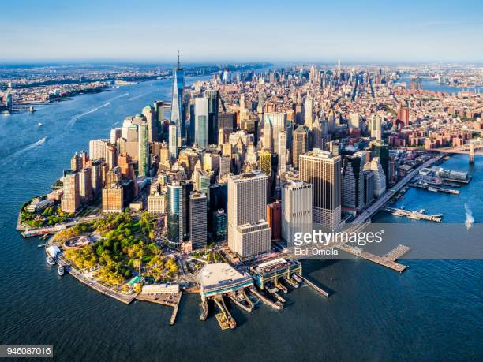

Downtown Skyview
The following approximate definitions are used: Uptown Manhattan is the area above 59th Street; Upper Manhattan is the area above 96th Street. Downtown Manhattan is the area below 14th Street; Lower Manhattan is the area below Chambers Street. Midtown Manhattan is the area between 34th Street and 59th Street.
Manhattan Bridge

It has seven lanes for cars, four for trains, a pedestrian walkway, and a bike lane. ... The Manhattan Bridge has a pedestrian path, and where it ends in Manhattan's Chinatown neighborhood is some blocks north of where the Brooklyn Bridge hits Manhattan at City Hall.
Brooklyn Bridge

The Brooklyn Bridge is famous because there had never been a bridge like it before. When it was finished in 1883, it was the first steel-wire suspension bridge and the longest suspension bridge in the world